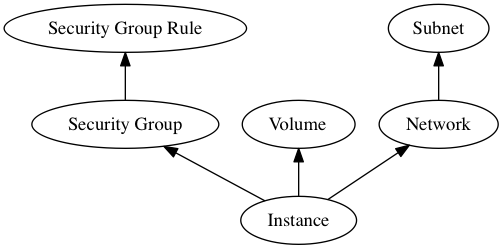

Downpour:
Moving Workloads with Ansible
Ansible Open Source Day, May, 2017
Doug Hellmann, Red Hat
Our Requirements
- Download all tenant data from one cloud
- Upload it to another cloud
- Retain relationships
- Support multiple OpenStack versions
- Be flexible
Range of Use Cases
| Easy | Hard | |
|---|---|---|
| Ownership | Admin | Tenant |
| Backend | Shared storage | Shared nothing |
| Applications | One per tenant | Rats nest |
Tenant ACLs
No admin credentials are needed.
Shared Nothing
Works on completely disconnected clouds.
Multi-application Tenant
Export a subset of a tenant's resources.
Trade-offs
- Not a live migration tool.
- The tool does not prevent application disruption.
- Requires full data export.
- UUIDs are not preserved.
Multi-phase approach
- Select resources
- Export
- Import
- Cleanup old resources
Select Resources
- downpour query
- Regular expressions
- Flavor
- Network?
- Suggestions?
Export
- downpour export
- Explicitly listed resources (image, volume, server)
- Automatic dependency resolution
Export
# Resources to be exported by downpour
servers:
- name: "downpour-demo-tiny"Import
- Spoiler alert: ansible-playbook
- Idempotent
- Someone else wrote it!
Import
tasks:
- lineinfile:
create: 'yes'
dest: uuids.csv
insertbefore: BOF
line: '"Resource Type","Resource Name","Old","New"'
regexp: '"Resource Type","Resource Name","Old","New"'
state: present
name: Initializing UUID mapping fileImport
- name: Add security group downpour-demo
os_security_group:
description: Demo group used for downpour
name: downpour-demo
state: present
register: sg001
- lineinfile:
dest: uuids.csv
insertafter: EOF
line: '"security group","downpour-demo","6deea469-54bd-4846-b12a
-79fa6b482280","{{sg001.secgroup.id}}"'
regexp: '"security group","downpour-demo","6deea469-54bd-4846-b1
2a-79fa6b482280"'
state: present
name: Map UUID for downpour-demoImport
- name: Create volume downpour-demo-tiny
os_volume:
display_description: null
display_name: downpour-demo-tiny
size: 1
state: present
register: vol002Resource Relationships

Help Wanted!
- Query tool
- Exporter
- More use cases
- Cinder API to upload/download volume contents
- http://git.openstack.org/cgit/openstack/downpour
Resources
dhellmann/presentation-downpour
https://doughellmann.com/presentations/downpour-lightning-talk

This work is licensed under a Creative
Commons Attribution 4.0 International License.